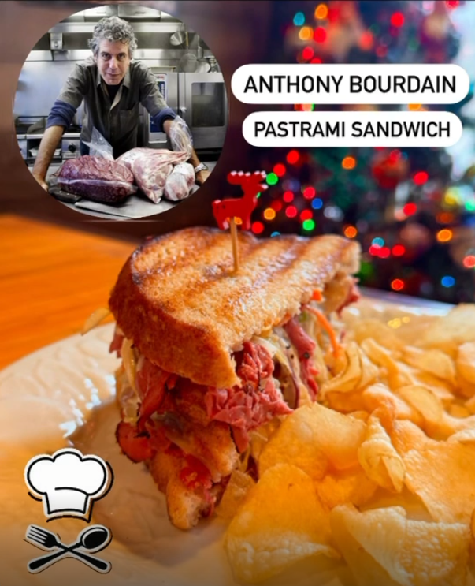
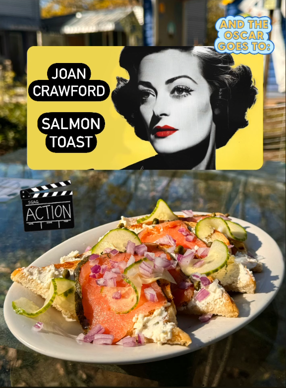
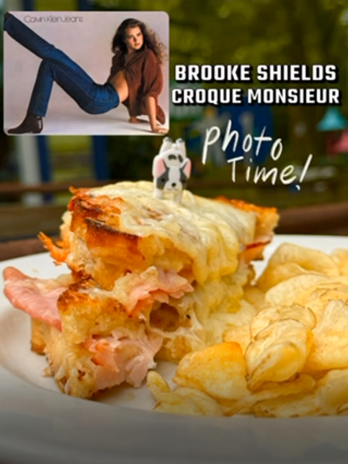
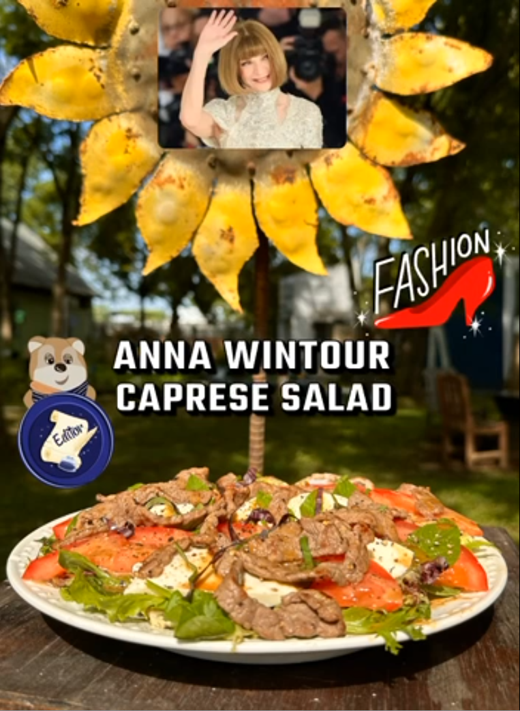
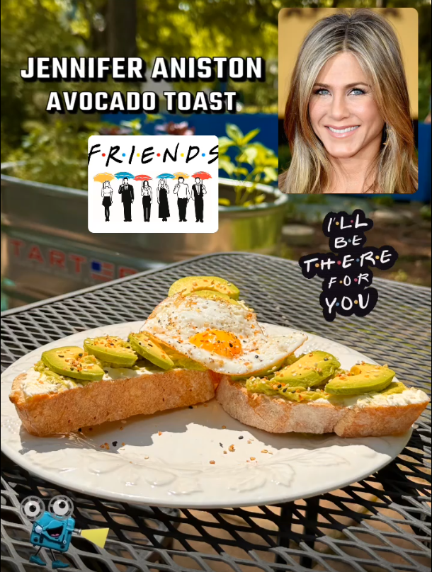
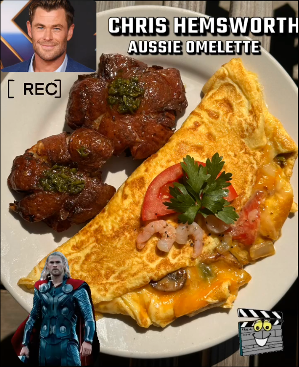
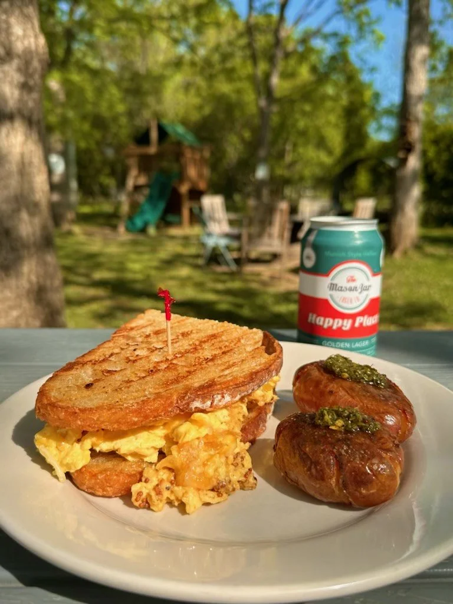
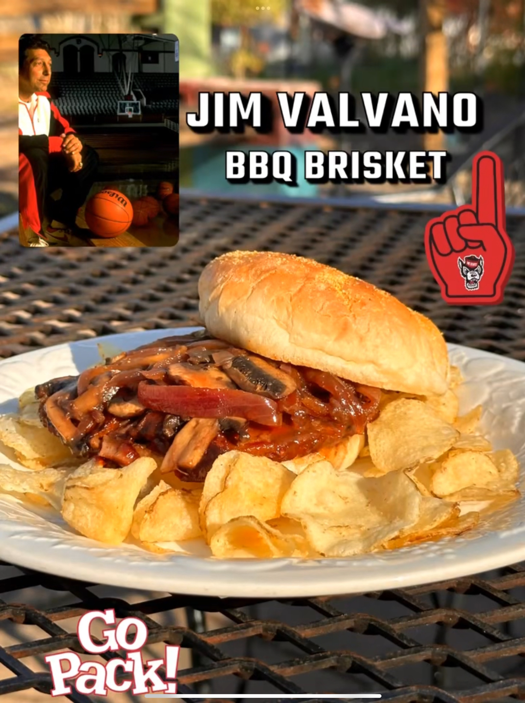

Famous EATS
Have you ever wondered what famous people’s favorite foods are?
Chef T does, and, his curiosity and love of cooking set off a whole lot of research, recipe development, & some colorful culinary words in order to put together a list of past and present movie stars, artists, writers, singers, coaches, athletes, activist, & political personalities and their favorite foods.
Each week Chef T will feature a favorite dish from Famous People and feature it as our special of the week along with a little history about the Chosen Person.
Follow our culinary Famous Eats journey and eat like you’re famous
We originally decided to start with Marilyn Monroe, but she had raw eggs in warm milk for breakfast!
Eek! No thank you. SO we changed gears, and to kick off the 1st Famous Eats…drum roll please!
Previous Famous EATS!
Salma Hayek
Salma Valgarma Hayek Pinault, born September 2, 1966, is an actress and film producer. She began her career in Mexico with starring roles in the telenovela Teresa (1989–1991) as well as the romantic drama Midaq Alley (1995). She soon established herself in Hollywood with appearances in films such as Desperado (1995), From Dusk till Dawn (1996), Wild Wild West (1999), and Dogma (1999). Hayek's portrayal of painter Frida Kahlo in the biopicFrida (2002), which she also produced, made her the first Mexican actress to be nominated for the Academy Award for Best Actress. As a public figure, Hayek has been cited as one of Hollywood's most powerful and influential Latina actresses as well as one of the world's most beautiful women by various media outlets. In 2021, she was honored with a star on the Hollywood Walk of Fame.
It’s no secret that Salma Heyak loves her home country’s Mexican cuisine. Sooo… this week for our Famous EATS! series we are having MIGAS!! Que es eso? you ask. Well, that is a an authentic Mexican Breakfast made with very cheesy scrambled eggs infused with sautéed yellow onion and deseeded jalapeno, so it’s not too hot for some of our gentler palates out there, a lovely red tomato joins the cast of veggies along with our farm fresh scrambled eggs, and to add a little crunch cha cha pan-fried until crispy spinach and herb tortillas make their debut as they are added into in this delightfully cheesy, crunchy dish with mouth popping flavor. Served with a side of salsa.
Perfecto! Is the only way to describe this well-balanced dish!
$13.95
12/18/2024-12/22/2024

Anthony Bourdain
Anthony Michael Bourdain, June 25, 1956 – June 8, 2018, Bourdain was a 1978 graduate of the Culinary Institute of America and a veteran of many professional kitchens during his career. He was an American celebrity chef, author, and travel documentarian. He starred in programs focusing on the exploration of international culture, cuisine, and the human condition.
Chef Bourdain was a connoisseur of the illustrious Pastrami Sandwich. Katz Deli and the Pastrami Queen served 2 of his favorites. This week it is a Small twist on an old-school favorite. sandwich. It is served on sourdough piled with thinly sliced beef pastrami, a smooth and mildly smoky provolone, sumptuously creamy house-made coleslaw and swirled with our own creamy Russian dressing and it is all melded together in a butter-basted grill pan till nice and crunchy on the outside.
You will be falling in love one bite at a time with this rich, savory, sandwich flecked with spice and smoke! Muah!
$15.95
12/11/2024-12/15/2024
Sarah McLachlan
Sarah Ann McLachlan, born January 28, 1968, is a Canadian singer-songwriter. As of 2015, she had sold over 40 million albums worldwide. McLachlan's best-selling album to date is Surfacing (1997), for which she won two Grammy Awards (out of four nominations) and four Juno Awards. In addition to her personal artistic efforts, she founded the Lilith Fair tour, which showcased female musicians. She is most famously known for the songs Angel and I Will Remember You.
According to Food.com, Sarah McLachlan is just wild about Asparagus Frittatas, so this is our Famous Eats! dish of the week! We kick off this frittata party by sautéing onions and mushrooms in butter until they are golden, then asparagus joins the concerto with a nutmeg sprinkle and wilted spinach. Once the cherry tomatoes are finished oven-roasting in garlic they join the band in a cast iron skillet along side of our right out of the garden basil, we picked just before the cold weather set in, and our velvety farm fresh egg mixture is poured over the top and covered with a handful of mozzarella before popping it into the oven to finish off this symphony of flavors.
This Asparagus Frittata is like the song of an angel for your palate that you will remember and come back for more, more, more!
Live Large, Eat Small
$14.95
12/4/2024 – 12/8/2024
Bobby Valentine or “Bobby V”
Robert John Valentine, born May 13, 1950 nicknamed "Bobby V", is an American former professional baseball player and manager. He also served as the athletic director at Sacred Heart University. Valentine played for the Los Angeles Dodgers (1969, 1971–72), California Angels (1973–1975), San Diego Padres (1975-1977), New York Mets (1977–78), and Seattle Mariners (1979) in MLB. He managed the Texas Rangers (1985–1992), the New York Mets (1996–2002), and the Boston Red Sox (2012) of MLB, as well as the Chiba Lotte Marines of Nippon Professional Baseball (1995, 2004–2009). CBSSports.com hired Valentine to represent its Fantasy Sports business,[3] including running a viral marketing campaign in which he made fun of the many times he was fired in his career and gave fans a chance to "Hire or Fire Bobby V" one more time.
A little known fact about Bobby V is that he claims to have invented “the wrap” in 1980. He loves wraps and introduced them into his restaurant. This week we bring you the Southwestern Chicken Wrap made our way!!We start with chicken breast marinated in our own special citrus chipotle seasoning then pan-sear it to seal in all of the juiciness and pop it into the oven to finish cooking, meanwhile, the flour tortilla is prepared by adding simple white rice, fire roasted corn mixture including red bell pepper, jalapenos, red onion and black beans. Once the chicken comes hot out of the oven it’s sliced and added to the wrap with 4 cheeses: cheddar, Monterey Jack, Mozzarella, and Colby that is finely grated so it melts into that gooey yummy-ness we all love, wrapped and topped a dollop of sour cream and drizzled with house-made with a chipotle honey crème.
This little wrap is a “homer” that would fire Bobby V right on up! Yep! It’s a little spicy this time folks!
Live Large, Eat Small
$16.95
11/20/2024 – 11/24/2024

Joan Crawford
Joan Crawford, born Lucille Fay LeSueur; March 23, 190? – May 10, 1977, was an American actress. She started her career as a dancer in traveling theatrical companies before debuting on Broadway. Crawford was signed to a motion picture contract by Metro-Goldwyn-Mayer in 1925. Initially frustrated by the size and quality of her parts, Crawford launched a publicity campaign and built an image as a nationally known flapper by the end of the 1920s. By the 1930s, Crawford's fame rivaled MGM colleagues Norma Shearer and Greta Garbo. Crawford often played hardworking young women who find romance and financial success. These "rags-to-riches" stories were well received by Depression-era audiences and were popular with women. Crawford became one of Hollywood's most prominent movie stars and one of the highest paid women in the United States, but her films began losing money. By the end of the 1930s, she was labeled "box office poison". After an absence of nearly two years from the screen, Crawford staged a comeback by starring in Mildred Pierce (1945), for which she won the Academy Award for Best Actress. AND… Joan WAS Back!!
According to Silver Screen Suppers, Joan Crawford loved smoked salmon, so this week we are having Smoked Salmon Toast! Sourdough is toasted in the pan until appropriately crispy, spread with just the perfect amount of Boursin fine herb cheese and a tender filet of smoked salmon is lovingly laid on top. To enhance these already ridiculously engaging flavors, a bit of marinated cucumber, red onion, and capers are swirled and sprinkled across the filets to create a blockbuster of taste.
You’ve never had mouth popping Salmon Toast like this before; it leaves you dramatically screaming, More! More! More!
Live Large, Eat Small
$16.95
11/13/2024 – 11/17/2024
Rebel Wilson
Rebel Melanie Elizabeth Wilson, born Melanie Elizabeth Bownds on 2 March 1980, is an Australian actress and producer. After graduating from the Australian Theatre for Young People in 2003, Wilson began appearing in the SBS comedy series Pizza (2003–2007) and later appeared in the sketch comedy show The Wedge (2006–2007). She wrote, produced and starred in the musical comedy series Bogan Pride (2008). Shortly after moving to the United States, Wilson appeared in the comedy films Bridesmaids, which was so hysterical many of us have seen it more than once, and A Few Best Men, both in 2011. In 2019, Wilson had her first lead roles in the comedies Isn't It Romantic and The Hustle with Anne Hathaway which was also fabulously funny. If you haven’t seen it, you should.
Today we are celebrating Rebel’s Burrito Drive By. It’s a very sassy burrito that features cheesy farm fresh eggs scrambled with cheddar and Monterey Jack cheeses, ground chuck for you meat eaters out there, our house-made salsa with our last little sweet bell peppers out of our garden (I don’t know, they just keep growing, it’s great!) mingled alongside some garlic, cilantro, cucumber and all of those other ingredients that make salsa so darn tasty, and AVOCADO, wrapped in a flour tortilla, topped with sour cream and that saucy roja sauce then a hit with a bit of Tajin to create the delicious, well balanced flavors of this Latin fare.
This is NOT the burrito you want to throw out of the window in a drive-by, au contraire, you really, really want to eat this one, and come back for seconds!
Live Large, Eat Small
$15.95
11/06/2024 – 11/10/2024
Courteney Cox
Courteney Bass Cox, born June 15, 1964, is an American actress and filmmaker. She rose to international prominence for playing Monica Geller in the NBC sitcom Friends (1994–2004) and Gale Weathers in the horror film franchise Scream (1996–present). And… who can forget her as Michael J. Fox’s girlfriend in Family Ties? Her accolades include a Screen Actors Guild Award, nominations for two Emmy Awards and a Golden Globe Award, and a star on the Hollywood Walk of Fame.
To celebrate the passion that Courteney Cox has for veggies, we decided to take all her favorites and combine them in a Stuffed Pepper. Bell peppers are lightly roasted in the oven just enough to coax out their soft, sweet notes, and then the stuffing begins with the buttery, nutty, flavor of Moroccan couscous, our veggie blend (which just happens to be all of her favorites) kale, broccoli, zucchini, onion & asparagus) sautéed until just tender and in comes the black beans that have been seasoned Just Right with a bit of chipotle, garlic, and cayenne among other tasty spices. At this point, if you prefer to add ground chuck to these little “Friends” that is exactly what we will do! Lastly, a heaping handful of cheddar cheese is added on top and baked in the oven until it creates a melted cloud of heaven on top.
Just like the line in Friends, “Joey doesn’t share food!” You will not want to share this fabulous dish with anyone either! It’s just that GOOD!
Live Large, Eat Small
$14.95 (just veggies) $15.95 (add meat)
10/30/2024 – 11/03/2024
Bobby Flay
Robert William Flay, born December 10, 1964, is an American celebrity chef, food writer, restaurateur, and television personality. Flay is the owner and executive chef of several restaurants and franchises, including Bobby's Burger Palace, Bobby's Burgers, and Amalfi. He has worked with Food Network since 1995, which won him four Daytime Emmy Awards and a star on the Hollywood Walk of Fame. Not to mention his 36 seasons of the TV show Beat Bobby Flay! Wow! And…one more interesting fact, at age 8, Flay asked for an Easy-Bake Oven for Christmas. His father thought that a G.I. Joe would be more appropriate. Despite his father's objections, he received them both.
One of Bobby Flay’s favorite meals is a Sunday Brunch that includes Eggs Royale, psst, that’s eggs benedict add smoked salmon instead of Canadian bacon, this is going to thrill all of you salmon lovers out there. Our English muffin is buttery and toasted to add that bit of crunch, topping the muffin comes savory, slightly smoky pieces of salmon and two perfectly poached eggs so that the moment your fork slightly touches the eggs the yolk burst open spilling out underneath our own velvety version of Sauce Hollandaise that we are so well-known for, and, lastly, a few chopped chives and fresh cracked black pepper seal this Royale delight.
Come and lavish your taste buds in Eggs Royale while enjoying Bobby Flay’s 3 favorite “F words” Friends, Family & Food!
Live Large, Eat Small
$17.95
10/23/2024 – 10/27/2024
Dolly Parton
Dolly Rebecca Parton, born January 19, 1946, is an American singer, songwriter, actress, and philanthropist, known primarily for her decades-long career in country music. After achieving success as a songwriter for others, Parton made her album debut in 1967 with Hello, I'm Dolly, which led to success during the remainder of the 1960s (both as a solo artist and with a series of duet albums with Porter Wagoner), before her sales and chart peak arrived during the 1970s and continued into the 1980s. Some of Parton's albums in the 1990s did not sell as well, but she achieved commercial success again in the new millennium and has released albums on various independent labels since 2000, including her own label, Dolly Records. With a career spanning 60 years, Parton has been described as a "country legend" and has sold more than 100 million records worldwide, making her one of the best-selling music artists of all time.
Well, HELLO Dolly’s Dish! Dolly Parton readily admits that she cannot live without potatoes and this dish she created for herself is full of them. It’s a one-pan meal full of comforting flavors. Grass fed ground beef is pan-fried along with sautéed yellow onion and fresh from our garden red and green sweet peppers (the last ones of the season), some lovely chunky, slightly crispy potatoes are thrown into this heavenly mix and seasoned with our chef’s proprietary blend of spices that compliment this dish and takes it to the next level of mouthwatering, then it is topped off with a generous helping of white and yellow cheddar cheeses and baked in the oven till the cheese is bubbly and gooey!! Woo!! Hoo!!! That is some kinda comfort food right there, folks!
To quote Dolly, "I always say, and it's always the truth, that every diet I ever fallen off was because of a potato of some kind. Because I can only go so many days without having a 'tater fix' as I call it." Come on by and get your “tater fix” Dolly Parton style!
Live Large, Eat Small
$15.95
10/16/2024 – 10/20/2024
Matthew Morrison
Matthew James Morrison is an American actor, dancer, and singer, best known for his role as Will Schuester on the Fox television show Glee (2009–2015).He has starred in multiple Broadway and off-Broadway productions, including appearing as Link Larkin in the original Broadway cast of Hairspray (2002), Fabrizio Nacarelli in the original Broadway cast of the musical The Light in the Piazza (2005, for which he received a Tony Award nomination), and the starring role of J.M. Barrie in the original Broadway cast of Finding Neverland (2015-2016).
Matthew Morrison loves sweet potatoes and even says they helped him achieve those perfect abs. It’s officially fall, and sweet potatoes are one of the official foods associated with fall, and this Sweet Potato Hash tastes like fall. The sweet potatoes are roasted with smoked paprika and garlic to add some savory notes then they are pan fried with sautéed onion, sweet bell peppers and just a hint of Serrano peppers from our Small garden, a dusting of chopped fresh parsley, and topped with two eggs made according to your wishes. Want a few bacon bits sprinkled on? We can do that too.
So as the head of the Glee Club, Mr Schuester said, “Being part of something special makes you special." So, Come, and be a part of our Famous EATS, and “release your inner diva” as you eat like a famous person! Doesn’t hurt that this dish is darn delicious, and did I mention…tastes like fall!?
Live Large, Eat Small
$14.95

Brooke Shields
Brooke Christa Shields, born May 31, 1965, is an American actress. A child model starting at the age of 11 months, Shields gained widespread notoriety at age 12 for her leading role in Louis Malle's film Pretty Baby (1978). She continued to model into her late teenage years and starred in several dramas in the 1980s, including The Blue Lagoon (1980), and Franco Zeffirelli's Endless Love (1981).In 1983, Shields suspended her modeling career to attend Princeton University, where she subsequently graduated with a bachelor's degree in Romance languages. In the 1990s, Shields returned to acting.
Brook Shields fell in love with Croque Monsieur while in France at an antique market. She said said it’s the best she’s ever had, but she has not had the Small Café version! Our’s is served on buttered sourdough bread loaded with Gruyere cheese and a generous portion of Black Forest ham then it goes into the pan to be crisped, and here comes the Small twist… we add our luscious, velvety Hollandaise sauce on top with a bit more cheese that is melted in the oven and goes straight onto your plate with some crunchy chips ready for a taste bud party in your mouth!!
When you try our Croque Monsieur, it will be Endless Love and you will be back for more! Share the LOVE!
Live Large, Eat Small
$14.95
10/2/2024 – 10/6/2024
Coach Kim Mulkey
Kimberly Duane Mulkey, born May 17, 1962, is an American college basketball coach and former player. Since 2021, she has been the head coach for Louisiana State University's women's basketball team. A Pan-American gold medalist in 1983 and Olympic gold medalist in 1984, she is the first coach in NCAA basketball history to win national championships as a player, assistant coach, and head coach. Since the inception of the NCAA women's tournament in 1982, Mulkey has participated as a player or coach every year except 1985 and 2003.
When Chef learned the outrageous dressing Kim Mulkey loves turkey, she was happy because it opened the opportunity to do an exquisitely dressed Turkey Club Sandwich! This sandwich is piled high with roasted turkey, our applewood smoked bacon, creamy Munster cheese, the last of our garden fresh tomatoes, and crispy lettuce all stacked on 3 slices of grilled sourdough bread dressed with Dijonaise. Yum, yum for the tum tum!
Like Kim Mulkey told Caitlin Clark in the handshake line: "I sure am glad you leavin'. Girl, you somethin' else. Never seen anything like it." And…this Turkey Club Sandwich is somethin’ else! Never tasted anything like it!!!
Live Large, Eat Small
$15.95
9/25/2024 – 9/29/2024
Oprah Winfrey
Oprah Gail Winfrey, born January 29, 1954, known mononymously as Oprah, is an American talk show host, television producer, actress, author, and media proprietor. She is best known for her talk show, The Oprah Winfrey Show, broadcast from Chicago, which ran in national syndication for 25 years, from 1986 to 2011. Dubbed the "Queen of All Media", she was the richest African-American of the 20th century and was once the world's only black billionaire. By 2007, she was often ranked as the most influential woman in the world.
Most people are familiar with “Oprah’s Favorite Things” and among those “things” is Chicken Pot Pie! Since the weather is cooling, we thought it might be nice to enjoy some comfort food our version has loads of moist shredded chicken, a medley of traditional pot pie veggies like green beans, peas and corn, and the SAUCE, the white sauce is what makes this dish sooo special and luscious.
Come by and try one of the QUEEN OF MEDIA’S Favorite Things; you will not be disappointed!
Live Large, Eat Small
$14.95
9/18/2024 – 9/22/2024
Vince Vaughn
Vincent Anthony Vaughn, born March 28, 1970, is an American actor. He is known for starring as a leading man in numerous comedy films during the late 1990s and 2000s. He was nominated for a Screen Actors Guild Award and a Saturn Award.
Vince Vaughn was a tough one because he loves every kind of food, but we did run across one very interesting thing… a bagel breakfast sandwich called the Vince Vaughn Bagel Breakfast Sandwich. We had to do it because we love Vince Vaughn and his new series Bad Monkey. Can we say addicted and so very cute and if you’re not watching you should?! Anyway, this dish starts with a perfectly steamed, good-sized EVERYTHING BAGEL because they are the BEST! The Small version has yellow and white English cheddar cheeses melted into our scrambled farm fresh eggs, YUM, then it is topped with a generous amount of our Applewood Smoked Bacon and, here comes the double whammy for all you meat lovers, Canadian Bacon; you can add mayo if you prefer or our wonderful smashed potatoes as a side. However you want this everything bagel sandwich, it is simple, but, oh so so, so, so GOOD (just like Vince Vaughn)!
Come eat like a movie star… Vince Vaughn… this is a good one folks!
Live Large, Eat Small
$14.95
9/11/2024 – 9/15/2024
Gwyneth Paltrow
Gwyneth Kate Paltrow, born September 27, 1972, is an American actress and businesswoman. The daughter of filmmaker Bruce Paltrow and actress Blythe Danner, she established herself as a leading lady appearing in mainly mid-budget and period films during the 1990s and early 2000s, before transitioning to blockbusters and franchises. Her accolades include an Academy Award, a Golden Globe Award, and a Primetime Emmy Award.
Who doesn’t love a good frittata? Vogue asked Gwyneth Paltrow to share one of her favorite foods and she chose what she calls her Boyfriend Frittata and it is a good one… filled with caramelized onions, crispy turkey bacon, chopped, so you get a little with every bite, wilted spinach, potatoes and the perfect amount of seasonings mixed with farm fresh eggs, placed into a a baby cast iron frying pan then oven-baked and served with a side of dressed salad.
Boyfriend Frittata got its playful name from Gwyneth making this dish on the weekends for then boyfriend, now husband, Brad Falchuk. Healthy and Tastalicious! What more can you ask for?
Live Large, Eat Small
$14.95
9/4/2024 – 9/8/2024
Kate Winslet
Kate Elizabeth Winslet, born 5 October 1975, is an English actress. Known for her roles as headstrong and complicated women in independent films, particularly period dramas, she has received numerous accolades, including an Academy Award, a Grammy Award, two Primetime Emmy Awards, five BAFTA Awards and five Golden Globe Awards. Time magazine named Winslet one of the 100 most influential people in the world in 2009 and 2021. She was appointed Commander of the Order of the British Empire (CBE) in 2012.
Recently, Kate Winslet, a vegetarian, in case you did not know, took a break from Hollywood and headed for Cork where she took a cookery course. What was her favorite meal from the course, you wonder, well… it was Thai Cauliflower Curry with Jasmine Rice. Small’s versionof this fabulous dish begins with roasting the cauliflower in house-made Thai spice mix while sautéing yellow, red and orange sweet peppers and bok choi in a red Thai curry paste then combining all these fragrant veggies into a pot along with some creamy coconut milk and allowing it to slow simmer until all of the spices meld together creating Curry Heaven for your palate, served in a big bowl with a helping of lime infused jasmine rice and garlicky naan on the side. This delicately balanced dish is vegan, vegetarian, dairy-free, and AMAZING!
Kate, describing her thoughts about food, said “Food is one of the sexiest, most glorious pleasures that can possibly be had. I happen to love preparing it, I love eating it, I love sharing it.” And, Small Café feels the same way about sharing all of our foodie creations with all of our lovely café guests too! Let’s eat like the beautiful and accomplished Kate Winslet this week.
Live Large, Eat Small
$14.95
8/28/2024 – 9/1/2024
Guy Fieri
Guy Ramsay Fieri, born January 22, 1968, is an American restaurateur, author, and an Emmy Award winning television presenter. He co-owned three now defunct restaurants in California. He licenses his name to restaurants in cities all over the world, and is known for hosting various television series on the Food Network. In 2010, The New York Times reported that Fieri had become the "face of the network", bringing an "element of rowdy, mass-market culture to American food television" and that his "prime-time shows attract more male viewers than any others on the network".
A couple of things people may not know about Guy Fieri is his mom is from North Carolina so he grew up eating grits and he is not a big breakfast guy…WHAT?! However, when he does eat breakfast one of his go-tos is grits and ham. Voila… our chef added the Small twist to this southern classic and a food star was born…Grit Cakes with Honey Hickory Smoked Ham! REAL grits lovingly blended with milk, cheese, bacon and chives and cooled so they can be patted into cakes, dressed up with a mixture of Panko, herbs, and little bit more cheese then pan fried to the delightfully crunchy on the outside and creamy cheesiness on the inside Grit Cakes paired with a side of the house-made Honey Hickory Smoked Ham to FLABBERGAST YOUR TASTE BUDS!!
Don’t miss this one, as Guy would say, “It's got whiz bang wow in there!” Come and eat like Guy Fieri, celebrity chef!
Live Large, Eat Small
$16.95
8/21/2024 – 8/25/2024
Carrie Underwood
Carrie Marie Underwood, born March 10, 1983, is an American singer. She rose to prominence after winning the fourth season of American Idol in 2005. Underwood's single "Inside Your Heaven" made her the first country artist to debut atop the Billboard Hot 100 chart and the only solo country artist in the 2000s to have a number-one song on the Hot 100. Her debut album, Some Hearts (2005), was bolstered by the successful crossover singles "Jesus, Take the Wheel" and "Before He Cheats", becoming the best-selling solo female debut album in country music history. She won three Grammy Awards for the album, including Best New Artist. The next studio album, Carnival Ride (2007) had one of the biggest opening weeks of all time by a female artist and won two Grammy Awards. Her third studio album, Play On (2009), produced the single "Cowboy Casanova", which had one of the biggest single-week upward movements on the Hot 100.
Carrie Underwood is 100% vegetarian and about 80% vegan. She makes concessions on the holidays for cheese and any time for Doritos. One of her go to meals is Spinach Quesadillas with Fresh Salsa so we decided to “Let Jesus Take the Wheel” and give this dish a whirl by sautéing green onions, garden tomatoes with cumin, garlic and a splash of lemon juice then throwing in some spinach till it wilts and finally mixing in Monterey Jack cheese and some ricotta till it becomes and melty and gooey then we fold this savory concoction into a warmed flour tortilla add some of Chef T’s house-made salsa with peppers right out of our garden and grill it till the tortilla is crispy on the outside. Once on the plate, it gets a little sour cream, green onions, avocado and cilantro garnish and is served with a side of “Cowboy Casanova” Avocado Black Bean Salad!
Hang on to your hat because this scrump-dilly-ishous meal will take your taste buds on a “Carnival Ride” For Sure!! Come on in and eat like Carrie Underwood!
Live Large, Eat Small
$14.95
8/7/2024 – 8/11/2024
Chrissy Teigan
Christine Diane Teigen (born November 30, 1985) is an American model and television personality. She made her professional modeling debut in the annual Sports Illustrated Swimsuit Issue in 2010 and appeared on the 50th-anniversary cover alongside Nina Agdal and Lily Aldridge in 2014. She formerly appeared as a panelist on the syndicated daytime talk show FABLife (2015–2016). She co-hosted the musical competition series Lip Sync Battle (2015–2019) with LL Cool J and was a judge on the comedy competition series Bring the Funny (2019). Teigen has also authored three cookbooks.
Chrissy Teigen shares one of her favorite recipes for breakfast in the Happy Foodie. It just so happens to be a hash, and, we KNOW how much our guests LOVE when we have hash! This week it is Cheesy, Mildly Spicy Breakfast Hash made with red potatoes, onion, sweet peppers and jalapenos, straight from our garden at the café, all sautéed with garlic and a little olive oil then whole dish gets hit with smoked paprika and melted cheddar cheese to knock it up a notch! Top all of that taste bud bliss with the egg style of your choice and, if you prefer, a side of one of the many hot sauces from our hot sauce wall (some are house-made by chef). Vegan and vegetarian unless you do not want it to be; you can always add bacon, turkey or pork sausage.
You say POTATO and I say POTAHTO, any way you say it, let’s have the HASH!
Live Large, Eat Small
$13.50
7/31/2024 – 8/4/2024

Anna Wintour
Dame Anna Wintour (born 3 November 1949) is a British and American media executive, who has been serving as editor-in-chief of Vogue since 1988. Wintour has also served as Global Chief Content Officer of Condé Nast since 2020, where she oversees all Condé Nast publications worldwide, and concurrently serves as Artistic Director. Wintour is also Global Editorial Director of Vogue. With her trademark pageboy bob haircut and dark sunglasses, Wintour is regarded as the most powerful woman in publishing, and has become an important figure in the fashion world, serving as the lead chairperson of the annual haute couture Met Gala global fashion spectacle in Manhattan since the 1990s. Wintour is praised for her skill in identifying emerging fashion trends, but has been criticized for her reportedly aloof and demanding personality.
The iconic Anna Wintour is said to have the same lunch everyday Caprese Salad with Steak. This week we wanted to bring you something light and cool, given the warm weather, and this dish fits to a T. Garden tomatoes (not store bought and never refrigerated), delicate and delightfully milky mozzarella cheese layered on a bed mixed greens with aromatic basil leaves and finely cut, flash-seared ribbons of steak are also an element of this culinary editorial, then comes the house-made, tangy with a tad of sweet, balsamic reduction marrying all the flavors and creating a show-stopper of a taste bud experience.
One of Ms. Wintour’s famous quotes is “If you can’t be better than your competition, then just dress better”. What we WISH she said is “If you can’t be better than your competition, then just EAT better by trying my favorite meal at Small”. Wouldn’t that be great! Come and eat like one of the most powerful figures in fashion.
Live Large, Eat Small
$17.50
7/10/2024 - 7/10/2024
Danny Trejo
Daniel Trejo (born May 16, 1944) is an American actor. Born in Los Angeles, Trejo's film career began in 1985, when he landed a role in Runaway Train (1985). The first film in which he was given a proper credited role was as Art Sanella in Death Wish 4: The Crackdown (1987). He went on to star in a multitude of other films, many of which were small parts as inmates, gangsters, or other criminals, appearing in Desperado, Heat (both in 1995), From Dusk till Dawn (1996), Con Air (1997), The Replacement Killers (1998), Reindeer Games (2000), and Once Upon a Time in Mexico (2003), among others.
Tough guy/bad boy, actor Danny Trejo, owner of Trejo Tacos is famous for saying, “I used to rob restaurants. Today I own eight of them.” He started his restaurants with some of his all time favorite recipes his most popular fav is the barbacoa taco. We have taken this recipe and added the SMALL twist and turned it into the Barbacoa Breakfast Burrito because there is more to love in a burrito. Chuck Roast was marinated in a myriad of spices including all the favorites garlic, chipotle peppers, cumin plus some Coca Cola. Yep, Coke gives this recipe some Zip-a-Doo-Dah, then it is roasted slow and low for 8 hours, shredded and placed into a flour tortilla with Fresh Farm Scrambled Eggs and Cheese, rolled, readying this burrito to be topped with House-Made Salsa using some of the tomatoes, cucumbers, and jalapenos right out of our café garden. Chef’s own Roja and Cilantro Avacado Sauces decorate the top along with a dollop of Sour Cream.
This Barbacoa Breakfast Burrito is a gift for your palate!
Live Large, Eat Small
$15.95
7/32024 - 7/7/2024
Blac Chyna
Angela Renée White (born May 11, 1988), commonly known as Blac Chyna, is an American model, television personality, rapper and socialite. She originally rose to prominence in 2010 as the stunt double for Nicki Minaj in the music video for the song "Monster" by Kanye West. She gained wider media attention after being name-dropped in the song "Miss Me" by Drake the same year, leading to a number of magazine appearances, including pieces in Dimepiece, Straight Stuntin and Black Men's Magazine. In 2014, she launched her own makeup brand, "Lashed by Blac Chyna", and a beauty salon in Encino, Los Angeles. She has since made a number of media appearances, including in her own reality television shows, Rob & Chyna and The Real Blac Chyna.
According to sheknows article about Blac Chyna and Rob Kardashian, her boyfriend, he has spent $13,000 at P.F. Chang’s to satisfy Chyna’s baby bump cravings and these cravings included Lettuce Wraps! We have them this week and our chicken is stir fried in sesame oil with some julienned red and orange sweet peppers, a smidge of red cabbage for that nice crunch factor and all the savory Asian flavors including ginger, onions and garlic. This gluten free delicacy is then laid into a tender butter cup lettuce leaf on a bed of rice noodles and bathed in our very own, top secret lettuce wrap sauce which really “Set It Off” just like the theme song from their reality show Rob and Chyna.
All you have to do is wrap it up and savor each and every bite!! Look at you eating like a celebrity!
Live Large, Eat Small
$15.95
6/26/2024 - 6/30/2024
Steve Jobs
Steven Paul Jobs (February 24, 1955 – October 5, 2011) was an American businessman, inventor, and investor best known for co-founding the technology giant Apple Inc. Jobs was also the founder of NeXT and chairman and majority shareholder of Pixar. He was a pioneer of the personal computer revolution of the 1970s and 1980s.
Young Steve Jobs was a fruitarian for a year while cultivating apples at a hippie commune, after that, he became a vegan, a diet he followed for the rest of his life… except for Japanese food. He loved all things sushi, so, for this week’s little piece of magic, we have hand rolled California Rolls, with a SMALL twist, made with imitation crab, sushi rice, freshly diced cucumber and avocado all wrapped in thin Nori sheets then the magic touch is added, our mildly spicy mayo based Secret Sushi Sauce is zigzagged across the top along with Nori Komi furikake sprinkles creating a little piece of art for your taste buds. Served with wasabi, soy sauce and pickled ginger on the side.
One of Steve Jobs’ famous quotes is “Be a yardstick of quality. Some people aren't used to an environment where excellence is expected” and this is the rule of our kitchen every day, every week and year after year because our guests deserve the best! Come in and eat like a famous inventor/innovator!
Live Large, Eat Small
$15.95
6/19/2024 - 6/23/2024
Sir Alfred Joseph Hitchcock
Sir Alfred Joseph Hitchcock KBE (13 August 1899 – 29 April 1980) was an English film director. He is widely regarded as one of the most influential figures in the history of cinema. In a career spanning six decades, he directed over 50 feature films, many of which are still widely watched and studied today. Known as the "Master of Suspense", Hitchcock became as well known as any of his actors thanks to his many interviews, his cameo appearances in most of his films, and his hosting and producing the television anthology Alfred Hitchcock Presents (1955–65). His films garnered 46 Academy Award nominations, including six wins, although he never won the award for Best Director, despite five nominations.
Alfred Hitchcock was an interesting fella for sure, he suffered from ovophobia, a fear of eggs, but his favorite food was, here it comes….ahh…the suspense…
Quiche Lorraine!
We are serving this traditional dish of creamy eggs blended with both classic and smoked Gruyere cheeses, our crumbled applewood smoked bacon, and a few pinches of nutmeg featuring a matinee of cayenne pepper all baked in our especially yummy cornmeal crust which keeps this dish gluten-free. To celebrate Hitchcock’s quirky sense of humor, (he once hosted a dinner party that featured all blue food) a clover of smashed and crisped blue potatoes with a touch of sour cream and green onion will make a guest appearance. Pair this anticipated repast with the lovely drink that Sir Hitchcock helped popularize…a Mimosa.
Hitchcock once said “To make a good movie you need 3 things the script, the script, the script.”To be a great restaurant you need tasty & consistent food, staff that are happy and love the guests and a pleasant atmosphere…oh wait! Small has it all!!
Live Large, Eat Small
$12.95
6/12/2024 - 6/16/2024

Thomas Jefferson
Thomas Jefferson (April 13, 1743 – July 4, 1826) was an American statesman, diplomat, lawyer, architect, philosopher, and Founding Father who served as the third president of the United States from 1801 to 1809. He was the primary author of the Declaration of Independence. Following the American Revolutionary War and prior to becoming president in 1801, Jefferson was the nation's first U.S. secretary of state under George Washington and then the nation's second vice president under John Adams. Jefferson was a leading proponent of democracy, republicanism, and individual rights, and produced formative documents and decisions at the state, national, and international levels. His writings and advocacy for human rights, including freedom of thought, speech, and religion, served as substantial inspirations to the American Revolution and subsequent Revolutionary War in which the Thirteen Colonies succeeded in breaking from British America and establishing the United States as a sovereign nation.
Among all of Thomas Jefferson’s accomplishments as one of the Founding Fathers, he was also quite the foodie, a wine connoisseur and had a very discerning palate. We know this because one of his favorite foods was French Fries which he learned about in France, and, thank goodness, introduced this American treasure to the United States of America. What are French fries without a burger, though? This week we are celebrating Jefferson’s love of French Fries that are seasoned and fried to the crunchy perfection we all know and love, and created by the queen of making them delicious, AB is in the kitchen, folks!. They come along side a breakfast burger that is a 50-50 mix of pork and beef seasoned with onion powder, garlic, salt. pepper, smoked paprika and a dash of red pepper. This lovely taste of art is placed on a sandwich-sized English muffin slathered with a bit of garlic aioli, topped with lettuce, fresh cucumber salsa, our applewood-smoked bacon, an over medium farm fresh egg and a melty portion of Munster cheese.
All men may be created equal, but not all restaurants are created equal, wink, wink.
Live Large, Eat Small
$17.95
6/5/2024 - 6/9/2024

Jennifer Aniston
Jennifer Joanna Aniston (born February 11, 1969) is an American actress. She rose to international fame for her role as Rachel Green on the television sitcom Friends from 1994 to 2004, which earned her Primetime Emmy, Golden Globe, and Screen Actors Guild awards. Since her career progressed in the 1990s, Aniston has consistently ranked among the world's highest-paid actresses, as of 2023.
Jennifer Aniston’s go-to high protein breakfast is avocado toast with an egg, so this week we are featuring a Pinwheel of Avocado Toast made with La Farm ciabatta bread slices, smeared with cream cheese and smashed avocado seasoned with onion, garlic, a touch of red pepper flakes, poppy and sesame seeds, then more sliced avocado and served with our locally sourced egg, in the style of your choice, placed right in the center, and, for the finale, a lavish sprinkling of the all time favorite Everything Bagel Seasoning.
Come relish in the same high protein, trendy avocado toast breakfast that the stylish, svelte Rachel Green, oops, I mean, Jennifer Aniston enjoys as her flavorsome, healthy, go-to breakfast.
$14.95
5/29/2024 - 6/2/2024

Chris Hemsworth
Christopher Hemsworth (born 11 August 1983) is an Australian actor. He rose to prominence playing Kim Hyde in the Australian television series Home and Away (2004–2007) before beginning a film career in Hollywood. In the Marvel Cinematic Universe (MCU), Hemsworth starred as Thor in the 2011 film of the same name and reprised the role in several films, including in Thor: Love and Thunder (2022), which established him among the world's highest-paid actors.
Chris Hemsworth loves omelettes so much he eats three of them for breakfast according to Buisness Insider. Since he is an omelette loving Aussie, this week we are having an Aussie Omelette and there are many folks out there that are going to give this one a Thunderous Thumbs Up! It is a divine mixture of mushrooms, sweet bell pepper, onion, tomato, and SHRIMP sautéed in olive oil and seasoned just so with salt, pepper, curry, and fresh pressed garlic then all of these lovely, fragrant ingredients are folded into an omelette with melted cheddar cheese.
This week Small Café invites you to come and eat like a god…the the god of thunder, Thor!
$16.95
5/22/2024 - 5/26/2024
Mark Wahlberg
Mark Robert Michael Wahlberg (born in Boston Massachusettes June 5, 1971), formerly known by his stage name Marky Mark, is an American actor. His work as a leading man spans the comedy, drama, and action genres. He has received multiple accolades, including a BAFTA Award, and nominations for two Academy Awards, three Golden Globe Awards, nine Primetime Emmy Awards, and three Screen Actors Guild Awards. He gained notoriety as a member of the hip hop group Marky Mark and the Funky Bunch in the 1990s, with whom he released the albums Music for the People (1991) and You Gotta Believe (1992). Wahlberg made his screen debut in Renaissance Man (1994) and had his first starring role in Fear (1996). He received critical praise for his performance as porn actor Dirk Diggler in Boogie Nights (1997).
According to YAHOO!life Mark Wahlberg’s first meal of the day consist of five eggs, a pork chop, wild smoked salmon, greek yogurt, berries and a green juice. Talk about getting in your protein and eating A LOT of food! We had to single out one of his food choices and now we are bringing it to you. Out of the long food list we went with…. the Pork Chop marinated in buttermilk, garlic and honey then dredged through our own mixture of Italian bread crumbs and fried until crispy, crunchy, and golden brown cradled on a house-made cheddar chive biscuit smeared with Chef’s dijonaise and served with a side of Apple Crumble, a step up from Wahlburgers’ apple crisp…. Psst! Our’s is better.
Wowza! That is a YUMMY meal and a dessert all on one plate!
Come get your Marky Mark on!!
$17.95
5/15/2024 - 5/19/2024
Napoleon I
Napoleon Bonaparte (born Napoleone di Buonaparte; 15 August 1769 – 5 May 1821), later known by his regnal name Napoleon I, was a French emperor and military commander who rose to prominence during the French Revolution and led successful campaigns during the Revolutionary Wars. He was the leader of the French Republic as First Consul from 1799 to 1804, then of the French Empire as Emperor of the French from 1804 until 1814, and briefly again in 1815. His political and cultural legacy endures as a celebrated and controversial leader. He initiated many enduring reforms, but has been criticized for his authoritarian rule. He is considered one of the greatest military commanders in history and his wars and campaigns are still studied at military schools worldwide.
This recipe is a pretty fancy one with lots of meaty parts. It is said that Napoleon had this dish after he won the Battle of Marengo and his chef sent men throughout the town to rustle up whatever they could find and they came back with some chickens, eggs, crayfish, and crusty bread along with wild mushrooms, onions and garlic they foraged, and from these ingredients Chicken Marengo was born and it was Napoleon’s favorite dish. With this knowledge, Chef T went to work to create a beautiful concerto of this dish that has tender chicken sautéed in onions, butter and olive till brown then slowly finished off in a tomatoes, onions, and garlic sauce. Once plated, a little extra sauciness is added along with a poached egg, and tiny shrimp go right on top. Toast points are on the side for dipping.
Beautiful Recipe. Beautiful Presentation. Beautiful Tasting. And…a memorable, unique dish for your Beautiful Mom to eat like royalty for Mother’s Day.
$18.50
5/8/2024 - 5/12/2024

Jane Austen
Jane Austen 16 December 1775 – 18 July 1817) was an English novelist known primarily for her six novels, which implicitly interpret, critique, and comment upon the British aristocracy at the end of the 18th century. Austen's plots often explore the dependence of women on marriage for the pursuit of favourable social standing and economic security. Her works are a critique of the novels of sensibility of the second half of the 18th century and are part of the transition to 19th-century literary realism Her clever use of social commentary, realism and biting irony have earned her acclaim among critics and scholars. The more famous anonymously published novels include Sense and Sensibility (1811), Pride and Prejudice (1813), Mansfield Park (1814), and Emma (1816), were a modest success but brought her little fame in her lifetime. Can we say high school English class?
Jane Austen’s favourite Cheese and Egg Toastie was one of the recipes published in Martha Lloyd’s “household book”, while she lived with the Austen family, giving an authentic flavour of the writer’s life. Our version starts out with La Farm’s signature sourdough bread that is buttered and topped with a creamy concoction of Massey Creek Farm eggs blended with white and yellow English cheddar cheese, of course, stone ground mustard and a pinch of dry mustard, salt and pepper then pressed in a toastie press until the bread is golden and crunchy and paired with a side of of Small’s signature smashed potatoes. This combination of tastes is absolutely pleasant, once you try it, you will completely understand this novelist’s affinity for the bold toastie she dearly loved eating.
“It is a truth universally acknowledged” that this toastie will make you dream about having another one, and you will be eating like the famous novelist, Jane Austen!
$14.95
5/1/2024 - 5/5/2024
Emma Watson
Emma Charlotte Duerre Watson (born 15 April 1990) is an English actress. Known for her roles in both blockbusters and independent films, she has received a selection of accolades, including a Young Artist Award and three MTV Movie Awards. Watson has been ranked among the world's highest-paid actresses by Forbes and Vanity Fair, and was named one of the 100 most influential people in the world by Time magazine in 2015. As a child, she rose to stardom after landing her first professional acting role as Hermione Granger in the Harry Potter film series, having previously acted only in school plays.
Emma Watson openly admits her passionate affection for Mexican food and one of her favorite things to eat for breakfast is a Breakfast Burrito. Having learned this, Chef T set out create a beautifully balanced breakfast burrito infused with some culinary magic with perfectly scrambled eggs, chorizo (can be made without for the veggies out there), fresh cut avocado, house made cucumber pico de gallo, sriracha seasoned pan fried potatoes all wrapped up in a flour tortilla and plated on a bed of creamy queso sauce and house made roja sauce.
All of this is, of course, cooked over Hermione’s magical fire from her spell known as “Bluebell Flames” which makes this dish even more special. So, not only can eat like a movie star, but also like a “Muggleborn”.
$15.95
4/24/2024-4/28/2024
Frank Sinatra
Francis Albert Sinatra (December 12, 1915 – May 14, 1998) was an American singer and actor. Nicknamed the "Chairman of the Board" and later called "Ol' Blue Eyes", he is regarded as one of the most popular entertainers of the mid-20th century. Sinatra is among the world's best-selling music artists, with an estimated 150 million record sales globally.
Frank Sinatra’s favorite restaurant in NYC was an Italian place called Pasty’s where he could enter through a private doorway and have dinner in a private room that was always reserved for him. There he would enjoy one of his favorite meals, Stuffed Artichoke, which is filled with breadcrumbs browned in olive oil with a plethora of fragrant, flavorful herbs, a generous amount of finely grated Pecorino Romano cheese and baked till tender. Served with a side of red wine vinegar dipping sauce.
This dish is not only a delight to the palette and the sense of smell, but also to the eyes; it is beautiful and comes out looking like a lovely flower. Come in, and “get a kick out of” eating like a famous crooner!
$16.95
4/17/2024-4/21/2024
Ernest Hemingway
Ernest Miller Hemingway; July 21, 1899 – July 2, 1961) was an American novelist, short-story writer and journalist. Best known for an economical, understated style that significantly influenced later 20th-century writers, he is often romanticized for his adventurous lifestyle, and outspoken and blunt public image. Most of Hemingway's works were published between the mid-1920s and mid-1950s. His writings have become classics of American literature; he was awarded the 1954 Nobel Prize in Literature.
Hemingway woke up at 5:30 am to write and enjoy his breakfast with a passel of six-toed felines also known as Hemingway Cats. His passion for food spilled over into his writing as he described the meals that his characters ate. His favorite breakfast was pretty fancy, distinguished, and only Small Café has it…a Truffle Omelette with Canadian Bacon which Chef T has recreated for all of our Small Café guests to enjoy. Three eggs whisked, infused with cream, black truffle, fine herbs, and tipped into a heated pan of butter and a spot of truffle oil, filled with Parmesan cheese, cooked so the egg is still soft in the center, plated and swirled with crème fraiche and garnished with fine herbs and fresh black truffle slices, served with 2 slices of Canadian bacon on the side.
After returning home from WWI and his first time seeing the world which inspired all of the “zest that feeds life”, Hemingway told his sister, Marcelline, "Don't be afraid to taste all the other things that aren't here in Oak Park. This life is all right, but there's a whole big world out there full of people who really feel things. They live and love and die with all their feelings. Taste everything, Sis."
$16.95
04/10/2024-04/14/2024
Simon & Garfunkel
Simon & Garfunkel were an American folk rock duo consisting of singer-songwriter Paul Simon and singer Art Garfunkel. One of the best-selling music acts of the 1960s, their most famous recordings include three US number ones: "The Sound of Silence" (1965) and the two Record of the Year Grammy winners "Mrs. Robinson" (1968) and "Bridge over Troubled Water" (1970).
Inspired by Roberta Ashley’s 1967 “Singers & Swingers in the Kitchen: The Scene Makers Cookbook Dozens of Nutty Turned On Easy-To-Prepare Recipes From The Grooviest Gourmets Happening” for informal get-togethers with their friends, Simon and Garfunkel adapted an old-time New York favorite, Potato Pancakes. These potato pancake triplets will amuse your taste buds and make your full belly sing their praises. Russet potatoes are oven baked and mixed with all of Chef T’s little secrets like cheddar cheese, sour cream and a few other little surprise ingredients and then pan-fried till they develop that crisp coating on the outside, then they are plated and served with a dollop of sour cream and chives.
Coo, coo, ca-choo, Mrs. Roberson (and Small Café connoisseurs), you will love these more than you know!!
$13.95
04/03/2024 – 04/07/2024
